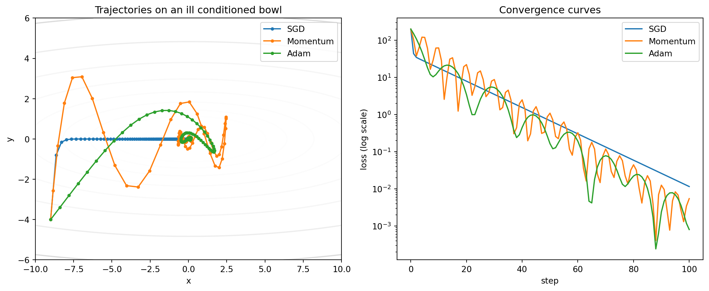

Optimization sits at the heart of every modern machine learning system. A neural network is, in the end, a parameterized function whose quality is measured by a loss, and training that network means searching the parameter space for values that make the loss small. Gradient descent and its many descendants are the algorithms that carry out this search. This chapter develops the family of first order optimization methods from first principles, moving from the textbook batch update through the stochastic and mini batch variants that make large scale training feasible, then through momentum and acceleration, the adaptive learning rate methods that dominate deep learning today, and finally to the practical question every practitioner faces: which optimizer should I use, and how do I tune it.
45.1 1. The Optimization Problem
45.1.1 1.1 Empirical risk and the gradient
Supervised learning typically minimizes an empirical risk. Given a dataset of \(n\) examples \(\{(x_i, y_i)\}_{i=1}^{n}\) and a model with parameters \(\theta \in \mathbb{R}^d\), we define a per example loss \(\ell_i(\theta)\) and seek to minimize the average
The gradient \(\nabla L(\theta)\) is the vector of partial derivatives of \(L\) with respect to each parameter. It points in the direction of steepest local increase of the loss, so its negative points toward steepest decrease. First order methods exploit exactly this fact. They never form the Hessian or any second order information explicitly, which is what makes them scale to models with billions of parameters where second order methods would be hopeless.
45.1.2 1.2 The core update
Every method in this chapter is a rule for turning gradients into parameter changes. The simplest such rule, plain gradient descent, is
where \(\eta > 0\) is the learning rate, also called the step size. The intuition is a ball rolling downhill on the loss surface. Everything that follows refines this picture: how much of the data we use to estimate the gradient, how we set \(\eta\) over time, how we smooth the trajectory, and how we adapt the step per coordinate.
For a convex and \(\beta\) smooth loss, gradient descent with a fixed step \(\eta \le 1/\beta\) converges to the minimum at a rate of \(O(1/t)\), and with strong convexity the rate becomes linear. Deep networks are not convex, but the local geometry near good solutions often resembles the convex case closely enough that this theory remains a useful guide.
To see where the rate comes from, suppose \(L\) is \(\beta\) smooth, meaning its gradient is \(\beta\) Lipschitz, \(\|\nabla L(x) - \nabla L(y)\| \le \beta \|x - y\|\). Smoothness gives the quadratic upper bound
For any \(\eta \le 1/\beta\) the factor \(1 - \beta\eta/2 \ge 1/2\), so each step decreases the loss by at least \(\tfrac{\eta}{2}\|\nabla L(\theta_t)\|^2\). This descent lemma is the workhorse behind almost every first order convergence proof: summing it over \(t\) steps shows that the smallest gradient norm seen so far shrinks as \(O(1/\sqrt{t})\) even without convexity, which is the standard guarantee for reaching a stationary point of a non convex loss. Adding convexity upgrades the conclusion from small gradient to small suboptimality \(L(\theta_t) - L(\theta^\star) = O(1/t)\), and strong convexity, where \(L(\theta) - L(\theta^\star) \ge \tfrac{\nu}{2}\|\theta - \theta^\star\|^2\) for some \(\nu > 0\), turns the recursion into a contraction \(\|\theta_{t+1} - \theta^\star\|^2 \le (1 - \eta\nu)\|\theta_t - \theta^\star\|^2\), giving the linear rate.
45.2 2. Batch, Stochastic, and Mini Batch Gradient Descent
45.2.1 2.1 Batch gradient descent
Batch gradient descent, sometimes called full batch, computes the exact gradient over the entire dataset before each update. It enjoys a smooth, deterministic trajectory and, for convex problems, predictable convergence. Its fatal weakness at scale is cost. A single update requires a full pass over \(n\) examples, so on a dataset with millions of examples you might wait minutes for one step. Worse, the deterministic descent direction tends to settle into the nearest local minimum or saddle region without the perturbations that often help escape poor regions.
45.2.2 2.2 Stochastic gradient descent
Stochastic gradient descent, or SGD, replaces the full gradient with the gradient of a single randomly chosen example:
The single sample gradient is an unbiased estimator of the true gradient, meaning \(\mathbb{E}[\nabla \ell_{i_t}(\theta)] = \nabla L(\theta)\), but it is noisy. That noise is both a curse and a blessing. It prevents the clean convergence of the batch method, so SGD typically requires a decaying learning rate to settle near a minimum. Yet the same noise lets the iterate jump across barriers, escape saddle points, and in deep networks it appears to bias the search toward flatter minima that generalize better. SGD also updates \(n\) times per epoch instead of once, so it usually makes far more progress per unit of computation.
The unbiasedness has a precise consequence for convergence. Write \(g_t = \nabla \ell_{i_t}(\theta_t)\) and decompose it as the true gradient plus zero mean noise, \(g_t = \nabla L(\theta_t) + \xi_t\) with \(\mathbb{E}[\xi_t] = 0\) and bounded variance \(\mathbb{E}\|\xi_t\|^2 \le \sigma^2\). Taking the expectation of the descent lemma along the stochastic update gives
The first order term drives the loss down, but the second order term, proportional to \(\eta^2 \sigma^2\), injects a noise floor that does not vanish at a fixed step size. The iterate therefore converges only to a neighborhood of the minimum whose radius scales with \(\eta \sigma^2\). This is exactly why a fixed learning rate makes SGD hover rather than settle, and why a schedule satisfying the Robbins and Monro conditions \(\sum_t \eta_t = \infty\) and \(\sum_t \eta_t^2 < \infty\), such as \(\eta_t \propto 1/t\), is needed for convergence to the exact optimum: the first condition keeps enough total step to reach the minimum while the second forces the noise floor to zero.
45.2.3 2.3 Mini batch gradient descent
In practice almost everyone uses the middle ground. Mini batch gradient descent estimates the gradient from a small subset, or mini batch, \(\mathcal{B}_t\) of size \(b\):
Mini batches reduce gradient variance by a factor of roughly \(b\) compared to single sample SGD, giving a more stable descent direction while preserving useful stochasticity. Just as important, batches of size 32 to 1024 map well onto the parallel arithmetic of GPUs and TPUs, so a batch of 256 often costs little more wall clock time than a batch of 1. The term SGD in deep learning almost always means mini batch SGD.
for epoch inrange(num_epochs):for batch in dataloader: # mini batch of size b grads = compute_gradients(batch, params) params = params - lr * grads
45.2.4 2.4 Batch size effects
Batch size interacts with the learning rate and with generalization. A common heuristic, the linear scaling rule, says that when you multiply the batch size by \(k\) you should multiply the learning rate by \(k\), since a larger batch yields a lower variance gradient that can tolerate a larger step. This rule holds across a useful range but breaks down for very large batches, where a brief learning rate warmup and eventually a square root scaling become necessary. Very large batches also tend to find sharper minima that generalize worse, an effect that warmup, regularization, and longer training partially offset.
45.3 3. Learning Rate and Schedules
45.3.1 3.1 Why the learning rate dominates
If you can tune only one hyperparameter, tune the learning rate. Too small and training crawls, wasting compute and risking getting stuck in shallow regions. Too large and the updates overshoot, the loss oscillates or diverges, and training collapses into NaNs. The usable range often spans several orders of magnitude, and the best value depends on the model, the batch size, the initialization, and the optimizer. A practical starting recipe is the learning rate range test: increase \(\eta\) exponentially over a few hundred iterations and watch where the loss starts to fall fastest and where it blows up. Pick a value comfortably below the blow up point.
45.3.2 3.2 Decay schedules
A fixed learning rate is rarely optimal across an entire run. Early on, large steps make rapid progress; late in training, smaller steps are needed to settle into a minimum without bouncing around. A schedule varies \(\eta_t\) over time. Common choices include step decay, where the rate is cut by a fixed factor at set milestones, and exponential decay, \(\eta_t = \eta_0 \, \gamma^{t}\). A widely used smooth option is cosine annealing,
which decays the rate from \(\eta_0\) to \(\eta_{\min}\) over \(T\) steps along a cosine curve. Cosine schedules, often combined with periodic warm restarts that reset the rate to refresh exploration, have become a default for training large models.
45.3.3 3.3 Warmup
Modern deep networks, especially Transformers, are sensitive at initialization. Adaptive optimizers compute unreliable statistics in the first few steps, and large gradients can destabilize untrained layers. Learning rate warmup addresses this by ramping \(\eta\) linearly from near zero up to its target value over the first few hundred or thousand steps, after which a decay schedule takes over. The combination of linear warmup followed by cosine or inverse square root decay is now standard practice for training large language models and vision Transformers.
45.4 4. Momentum and Nesterov Acceleration
45.4.1 4.1 Classical momentum
Plain gradient descent struggles in ravines, regions where the loss surface curves much more steeply in some directions than others. The iterate zigzags across the steep walls while creeping slowly along the gentle floor. Momentum fixes this by accumulating an exponentially weighted moving average of past gradients, building up velocity in consistent directions and damping oscillations. The update introduces a velocity vector \(v_t\):
The momentum coefficient \(\mu\), typically 0.9, controls how much past velocity carries forward. The physical analogy is a heavy ball rolling downhill: it gathers speed in steady directions and its inertia smooths out the back and forth jitter. In the ravine, the oscillating components partly cancel across steps while the consistent component along the floor accumulates, so the ball accelerates toward the minimum.
The exponential moving average view makes this precise. Unrolling the velocity recursion from \(v_0 = 0\) gives a geometric sum over the entire gradient history,
so \(v_{t+1}\) is a weighted average of past gradients with weights decaying geometrically into the past. The weights sum to \(\sum_{j=0}^{\infty}\mu^j = 1/(1-\mu)\), which means the effective step taken along a persistent gradient direction is amplified by \(1/(1-\mu)\) relative to plain gradient descent. For \(\mu = 0.9\) this is a tenfold amplification, and the effective averaging window has length on the order of \(1/(1-\mu) = 10\) recent gradients. Directions in which the gradient repeatedly flips sign average toward zero, while directions in which it points consistently the same way build up to roughly \(1/(1-\mu)\) times the single step magnitude. On a quadratic with condition number \(\kappa\), tuning \(\mu\) near \(1\) improves the convergence rate from the \(O(\kappa)\) iterations of gradient descent to \(O(\sqrt{\kappa})\), the same square root improvement that Nesterov acceleration achieves.
45.4.2 4.2 Nesterov accelerated gradient
Nesterov accelerated gradient, or NAG, sharpens momentum with a look ahead. Instead of computing the gradient at the current point, it computes it at the point the velocity is about to carry the iterate to:
By evaluating the gradient at the look ahead position \(\theta_t + \mu v_t\), NAG gets a correction that anticipates where momentum is heading, which lets it slow down before overshooting. The difference from classical momentum is a single first order correction term: expanding \(\nabla L(\theta_t + \mu v_t) \approx \nabla L(\theta_t) + \mu \, \nabla^2 L(\theta_t)\, v_t\) shows that NAG adds a term proportional to the Hessian acting on the velocity, a cheap implicit second order nudge that damps the overshoot a step before it happens. For smooth convex functions this yields the optimal \(O(1/t^2)\) convergence rate, which Nesterov proved is the best achievable by any first order method using only gradients, a genuine improvement over the \(O(1/t)\) of plain gradient descent. In deep learning the practical gain over classical momentum is usually modest, but NAG remains a common and well behaved choice.
45.5 5. Adaptive Learning Rate Methods
The methods so far apply one global learning rate to every parameter. Adaptive methods instead give each parameter its own effective rate, scaled by the history of gradients it has seen. This helps enormously when features differ wildly in scale or frequency, as in sparse data or in deep networks where different layers operate on very different gradient magnitudes.
45.5.1 5.1 AdaGrad
AdaGrad accumulates the sum of squared gradients per coordinate and divides each update by its square root. Writing \(g_t = \nabla L(\theta_t)\) and letting operations act elementwise,
Coordinates with large accumulated gradients get small steps, and rarely seen coordinates retain large steps. This made AdaGrad excellent for sparse problems such as text and recommendation features. Its weakness is that \(G_t\) only grows, so the effective per coordinate rate \(\eta / \sqrt{G_t}\) decays monotonically toward zero. After \(t\) steps a coordinate that has seen gradients of typical magnitude \(g\) has \(G_t \approx t g^2\), so its effective step shrinks like \(\eta / (g\sqrt{t})\). In the convex online setting this \(1/\sqrt{t}\) decay is exactly what is needed: AdaGrad attains a regret bound of \(O(\sqrt{t})\) that adapts to the geometry of the data, beating non adaptive subgradient descent when gradients are sparse or unevenly scaled. In long non convex deep learning runs the same shrinkage is a liability, because the rate collapses while the loss is still far from a good solution and the method effectively stops learning.
45.5.2 5.2 RMSProp
RMSProp repairs AdaGrad by replacing the ever growing sum with an exponentially weighted moving average of squared gradients, so old gradients are gradually forgotten and the effective rate does not collapse:
The decay \(\rho\), usually around 0.9, sets the effective window over which squared gradients are averaged. Because the denominator tracks a moving estimate of recent gradient magnitude rather than an unbounded sum, RMSProp keeps adapting indefinitely and works well on non stationary and non convex objectives. It was a workhorse for recurrent networks and remains a solid choice today.
45.5.3 5.3 Adam
Adam combines the two good ideas above: momentum on the gradient and RMSProp style scaling by the second moment. It maintains an exponentially weighted average of the gradient, the first moment \(m_t\), and of the squared gradient, the second moment \(v_t\):
Because \(m_0\) and \(v_0\) start at zero, these estimates are biased toward zero in the early steps. The bias correction is not an arbitrary fudge factor; it follows from computing the expectation of the running average exactly. Unrolling the second moment recursion from \(v_0 = 0\) gives
Assume for the analysis that the true second moment is roughly stationary, \(\mathbb{E}[g_k^2] \approx \mathbb{E}[g_t^2]\). Taking expectations and pulling the constant out of the geometric sum,
since the finite geometric series sums to \((1 - \beta_2^t)/(1 - \beta_2)\). The running average therefore underestimates the true second moment by exactly the factor \(1 - \beta_2^{\,t}\), which is close to zero in the first few steps and approaches one as \(t\) grows. Dividing by that factor removes the bias and recovers an unbiased estimate. The identical argument applied to \(m_t\) yields the \(1 - \beta_1^t\) correction. Adam therefore applies
The default hyperparameters \(\beta_1 = 0.9\), \(\beta_2 = 0.999\), and \(\epsilon = 10^{-8}\) work remarkably well across an enormous range of problems with little or no tuning. This robustness is why Adam became the default optimizer for most deep learning, from language models to generative networks. The first moment provides momentum like smoothing, while dividing by \(\sqrt{\hat{v}_t}\) gives each coordinate an adaptive scale, so Adam handles ill conditioned and noisy objectives gracefully.
m = beta1 * m + (1- beta1) * gv = beta2 * v + (1- beta2) * g * gm_hat = m / (1- beta1 ** t)v_hat = v / (1- beta2 ** t)params = params - lr * m_hat / (v_hat **0.5+ eps)
45.5.4 5.4 AdamW and decoupled weight decay
A subtle but important flaw lurks in how Adam handles weight decay. The classic way to regularize is L2, which adds \(\lambda \|\theta\|^2\) to the loss and so adds \(\lambda \theta\) to the gradient. In plain SGD this is identical to weight decay, a direct shrinkage of the parameters. In Adam they are not the same, because the added \(\lambda \theta\) term flows through the adaptive denominator \(\sqrt{\hat{v}_t}\) and gets scaled per coordinate, which weakens regularization exactly on the parameters with large gradients. AdamW fixes this by decoupling weight decay from the gradient based update, applying the shrinkage directly to the parameters:
The decay term sits outside the adaptive scaling, so every parameter is regularized uniformly. This single change improves generalization noticeably, and AdamW has become the standard optimizer for training Transformers and large language models. When people say they train with Adam today, they very often mean AdamW.
45.5.5 5.5 The generalization gap and beyond
Adaptive methods converge fast, but a well known observation is that on some vision tasks plain SGD with momentum finds solutions that generalize better than Adam, even when Adam reaches a lower training loss. The gap appears to relate to the kinds of minima each method favors and to how weight decay interacts with adaptivity, and AdamW closes much of it. Research continues to refine the family. Variants such as Nadam fold Nesterov look ahead into Adam, AMSGrad enforces a non decreasing second moment to fix a convergence flaw in the original analysis, LAMB enables very large batch training by adding layer wise normalization, and newer optimizers such as Lion and Sophia trade memory or add curvature information. None has displaced AdamW as the broad default, but each is worth knowing for the regime it targets.
45.6 6. Optimizers from Scratch: A Worked Comparison
Theory predicts that on an ill conditioned objective, plain SGD zigzags, momentum damps the oscillation, and Adam adapts its per coordinate scale to make rapid progress in every direction at once. The cleanest way to see this is to implement all three from scratch and watch them descend the same surface. The test function below is a quadratic bowl \(f(x, y) = \tfrac{1}{2}(x^2 + 20 y^2)\), deliberately stretched twentyfold along \(y\) so that a learning rate large enough to move in \(x\) would diverge in \(y\) under plain SGD. The cell is fully self contained and runs as written.
import numpy as npimport matplotlib.pyplot as pltnp.random.seed(0)# Ill conditioned quadratic bowl: f(x, y) = 0.5 * (a x^2 + b y^2)a, b =1.0, 20.0def f(p): x, y = preturn0.5* (a * x * x + b * y * y)def grad(p): x, y = preturn np.array([a * x, b * y])start = np.array([-9.0, -4.0])n_steps =100def run_sgd(lr): p = start.copy() traj = [p.copy()]for _ inrange(n_steps): p = p - lr * grad(p) traj.append(p.copy())return np.array(traj)def run_momentum(lr, mu=0.9): p, v = start.copy(), np.zeros(2) traj = [p.copy()]for _ inrange(n_steps): v = mu * v + grad(p) p = p - lr * v traj.append(p.copy())return np.array(traj)def run_adam(lr, b1=0.9, b2=0.999, eps=1e-8): p, m, v = start.copy(), np.zeros(2), np.zeros(2) traj = [p.copy()]for t inrange(1, n_steps +1): g = grad(p) m = b1 * m + (1- b1) * g v = b2 * v + (1- b2) * g * g m_hat = m / (1- b1 ** t) v_hat = v / (1- b2 ** t) p = p - lr * m_hat / (np.sqrt(v_hat) + eps) traj.append(p.copy())return np.array(traj)runs = {"SGD": run_sgd(lr=0.04),"Momentum": run_momentum(lr=0.018, mu=0.9),"Adam": run_adam(lr=0.6),}print(f"Final loss after {n_steps} steps:")for name, tr in runs.items():print(f" {name:9s} loss = {f(tr[-1]):.3e}")fig, (ax1, ax2) = plt.subplots(1, 2, figsize=(12, 5))xs, ys = np.linspace(-10, 10, 200), np.linspace(-6, 6, 200)X, Y = np.meshgrid(xs, ys)Z =0.5* (a * X **2+ b * Y **2)ax1.contour(X, Y, Z, levels=np.logspace(-1, 3, 20), cmap="Greys", alpha=0.5)for name, tr in runs.items(): ax1.plot(tr[:, 0], tr[:, 1], marker="o", ms=3, label=name)ax1.set_title("Trajectories on an ill conditioned bowl")ax1.set_xlabel("x"); ax1.set_ylabel("y"); ax1.legend()for name, tr in runs.items(): ax2.semilogy([f(p) for p in tr], label=name)ax2.set_title("Convergence curves")ax2.set_xlabel("step"); ax2.set_ylabel("loss (log scale)"); ax2.legend()plt.tight_layout()plt.show()
Final loss after 100 steps:
SGD loss = 1.153e-02
Momentum loss = 5.442e-03
Adam loss = 8.006e-04

Running the cell prints a final loss of roughly \(1.2 \times 10^{-2}\) for SGD, \(5.4 \times 10^{-3}\) for momentum, and \(8.0 \times 10^{-4}\) for Adam. The contour plot shows SGD crawling down the steep \(y\) wall in tiny careful steps, momentum overshooting and oscillating before settling, and Adam cutting almost straight to the floor because its second moment estimate rescales the \(y\) coordinate to match the \(x\) coordinate. The ordering on this surface matches the theory above: adaptivity buys the most when the curvature is badly unbalanced.
# Illustrative: same three optimizers in Julia.usingLinearAlgebraa, b =1.0, 20.0f(p) =0.5* (a * p[1]^2+ b * p[2]^2)grad(p) = [a * p[1], b * p[2]]start = [-9.0, -4.0]nsteps =100functionrun_adam(lr; b1=0.9, b2=0.999, eps=1e-8) p =copy(start); m =zeros(2); v =zeros(2)for t in1:nsteps g =grad(p) m = b1 .* m .+ (1- b1) .* g v = b2 .* v .+ (1- b2) .* (g .^2) mhat = m ./ (1- b1^t) vhat = v ./ (1- b2^t) p = p .- lr .* mhat ./ (sqrt.(vhat) .+ eps)endreturn pendp =run_adam(0.6)println("Adam final loss = ", f(p))
// Illustrative: Adam on the same 2D bowl.fn grad(p: [f64;2]) -> [f64;2] { [1.0* p[0],20.0* p[1]]}fn f(p: [f64;2]) ->f64{0.5* (1.0* p[0] * p[0] +20.0* p[1] * p[1])}fn main() {let (lr, b1, b2, eps) = (0.6_f64,0.9_f64,0.999_f64,1e-8_f64);letmut p = [-9.0_f64,-4.0_f64];letmut m = [0.0_f64;2];letmut v = [0.0_f64;2];for t in1..=100{let g = grad(p);for i in0..2{ m[i] = b1 * m[i] + (1.0- b1) * g[i]; v[i] = b2 * v[i] + (1.0- b2) * g[i] * g[i];let m_hat = m[i] / (1.0- b1.powi(t));let v_hat = v[i] / (1.0- b2.powi(t)); p[i] -= lr * m_hat / (v_hat.sqrt() + eps);}}println!("Adam final loss = {}", f(p));}
45.7 7. Choosing and Tuning Optimizers in Practice
45.7.1 7.1 A default decision path
For most deep learning today, start with AdamW. It is forgiving, converges quickly, and its defaults are strong, which makes it the right first choice for Transformers, language models, and most generative architectures. If you are training a convolutional vision model and care primarily about generalization, SGD with Nesterov momentum at \(\mu = 0.9\), paired with a good schedule and weight decay, is often the stronger choice and is what many state of the art image classifiers still use. For sparse features, the adaptive per coordinate scaling of Adam or even AdaGrad pays off. When in doubt, AdamW with a cosine schedule and warmup is a reliable baseline that rarely embarrasses you.
45.7.2 7.2 Tuning priorities
Tune in order of impact. The learning rate matters most by a wide margin, so search it first, typically over a logarithmic grid such as \(\{10^{-2}, 10^{-3}, 10^{-4}\}\) for Adam style methods and somewhat higher for SGD. The schedule and warmup length come next, then weight decay, then batch size. The momentum and the \(\beta\) coefficients usually work well at their defaults and rarely need adjustment. Resist the urge to tune everything at once. A learning rate range test plus a short schedule sweep captures most of the achievable gain for a fraction of the effort.
45.7.3 7.3 Diagnosing training from the loss curve
The loss curve tells you most of what you need. A loss that explodes to NaN or oscillates wildly means the learning rate is too high; cut it or add warmup. A loss that falls painfully slowly suggests the rate is too low or the schedule decays too aggressively. A loss that plateaus early may signal a vanishing effective rate, as in AdaGrad, or a need for a warm restart. A large gap between training and validation loss points to overfitting, calling for more weight decay, augmentation, or early stopping rather than an optimizer change. Reading these signatures is a core skill, and it is faster than any automated search.
45.7.4 7.4 Gradient clipping and numerical care
Two practical safeguards belong in nearly every training loop. Gradient clipping rescales the gradient when its norm exceeds a threshold \(c\),
\[
g \leftarrow g \cdot \min\!\left(1, \frac{c}{\|g\|}\right),
\]
which prevents a single large batch or an exploding gradient from blowing up the parameters. It is essential for recurrent networks and common for Transformers. Mixed precision training, where computations use 16 bit floats, speeds up training and saves memory but introduces numerical pitfalls; loss scaling and keeping the optimizer state in higher precision keep it stable. Finally, watch the \(\epsilon\) in adaptive methods. It guards against division by zero but, if set too large, it caps the adaptivity and quietly turns Adam back into something closer to plain SGD.
45.7.5 7.5 Putting it together
A robust modern recipe for training a large network looks like this. Use AdamW with \(\beta_1 = 0.9\), \(\beta_2 = 0.95\) to \(0.999\), and a decoupled weight decay around 0.1. Apply linear warmup over the first few percent of training, then cosine decay to a small final rate. Clip gradients to a norm of about 1. Choose the largest batch size your hardware allows and scale the learning rate accordingly. Monitor the loss curve and the gradient norm throughout. This combination underlies the training of most contemporary large models, and understanding why each piece is there, which is the substance of this chapter, is what lets you adapt the recipe when your problem does not fit the mold.
45.7.6 7.6 A coordinate system for choosing among many optimizers
The decision path in 7.1 covers the handful of optimizers this chapter derived, but the wider landscape is far larger: over a hundred optimizer variants now exist, and choosing among them for large-scale training has become a system-level decision constrained jointly by compute, memory, tuning budget, and task. Li et al. (2026), in a survey and benchmark they call OmniOpt, impose structure on this space in a way worth knowing even if you never leave AdamW. They make two unifying observations. First, every optimizer update can be read as a structured transformation through a five-stage meta-pipeline, from gradient processing to the final parameter step, and most methods, including all of the ones in this chapter, engage only one or two of those stages, so optimizers can be compared stage by stage rather than as monolithic black boxes. Second, many superficially different updates are the same object viewed through a norm-constrained linear minimization oracle (LMO): the update direction is the solution to a linear problem over a norm ball, so the choice of norm is what really separates the families, elementwise norms for the Adam family, spectral (matrix-aware) norms for methods such as Shampoo and Muon. These two views ground a two-axis taxonomy, one axis a mechanism family and the other the measurable training objective a method targets, instantiated in a cross-domain benchmark spanning language-model pretraining and image classification. The practical value here is exactly a coordinate system: instead of trying optimizers at random, locate a candidate by the pipeline stage it modifies and the norm its LMO assumes, and you can usually predict whether it will help on your problem before spending a single GPU-hour on it.
45.8 References
Robbins, H., and Monro, S. “A Stochastic Approximation Method.” Annals of Mathematical Statistics, 1951. DOI: 10.1214/aoms/1177729586
Bottou, L., Curtis, F. E., and Nocedal, J. “Optimization Methods for Large Scale Machine Learning.” SIAM Review, 2018. DOI: 10.1137/16M1080173
Nesterov, Y. “A method for solving the convex programming problem with convergence rate O(1/k^2).” Doklady Akademii Nauk SSSR, 1983.
Polyak, B. T. “Some methods of speeding up the convergence of iteration methods.” USSR Computational Mathematics and Mathematical Physics, 1964. DOI: 10.1016/0041-5553(64)90137-5
Sutskever, I., Martens, J., Dahl, G., and Hinton, G. “On the importance of initialization and momentum in deep learning.” ICML, 2013. https://proceedings.mlr.press/v28/sutskever13.html
Duchi, J., Hazan, E., and Singer, Y. “Adaptive Subgradient Methods for Online Learning and Stochastic Optimization.” JMLR, 2011. https://www.jmlr.org/papers/v12/duchi11a.html
Tieleman, T., and Hinton, G. “Lecture 6.5: RMSProp, COURSERA: Neural Networks for Machine Learning.” 2012.
Kingma, D. P., and Ba, J. “Adam: A Method for Stochastic Optimization.” ICLR, 2015. DOI: 10.48550/arXiv.1412.6980
Loshchilov, I., and Hutter, F. “Decoupled Weight Decay Regularization.” ICLR, 2019. DOI: 10.48550/arXiv.1711.05101
Loshchilov, I., and Hutter, F. “SGDR: Stochastic Gradient Descent with Warm Restarts.” ICLR, 2017. DOI: 10.48550/arXiv.1608.03983
Reddi, S. J., Kale, S., and Kumar, S. “On the Convergence of Adam and Beyond.” ICLR, 2018. DOI: 10.48550/arXiv.1904.09237
Goyal, P., et al. “Accurate, Large Minibatch SGD: Training ImageNet in 1 Hour.” 2017. DOI: 10.48550/arXiv.1706.02677
Smith, L. N. “Cyclical Learning Rates for Training Neural Networks.” WACV, 2017. DOI: 10.1109/WACV.2017.58
You, Y., et al. “Large Batch Optimization for Deep Learning: Training BERT in 76 minutes.” ICLR, 2020. DOI: 10.48550/arXiv.1904.00962
Chen, X., et al. “Symbolic Discovery of Optimization Algorithms (Lion).” NeurIPS, 2023. DOI: 10.48550/arXiv.2302.06675
Goodfellow, I., Bengio, Y., and Courville, A. “Deep Learning,” Chapter 8: Optimization for Training Deep Models. MIT Press, 2016. https://www.deeplearningbook.org/
Li, S. et al. “OmniOpt: Taxonomy, Geometry, and Benchmarking of Modern Optimizers.” 2026. https://arxiv.org/abs/2607.04033
Source Code
# Gradient Descent and Its VariantsOptimization sits at the heart of every modern machine learning system. A neural network is, in the end, a parameterized function whose quality is measured by a loss, and training that network means searching the parameter space for values that make the loss small. Gradient descent and its many descendants are the algorithms that carry out this search. This chapter develops the family of first order optimization methods from first principles, moving from the textbook batch update through the stochastic and mini batch variants that make large scale training feasible, then through momentum and acceleration, the adaptive learning rate methods that dominate deep learning today, and finally to the practical question every practitioner faces: which optimizer should I use, and how do I tune it.## 1. The Optimization Problem### 1.1 Empirical risk and the gradientSupervised learning typically minimizes an empirical risk. Given a dataset of $n$ examples $\{(x_i, y_i)\}_{i=1}^{n}$ and a model with parameters $\theta \in \mathbb{R}^d$, we define a per example loss $\ell_i(\theta)$ and seek to minimize the average$$L(\theta) = \frac{1}{n} \sum_{i=1}^{n} \ell_i(\theta).$$The gradient $\nabla L(\theta)$ is the vector of partial derivatives of $L$ with respect to each parameter. It points in the direction of steepest local increase of the loss, so its negative points toward steepest decrease. First order methods exploit exactly this fact. They never form the Hessian or any second order information explicitly, which is what makes them scale to models with billions of parameters where second order methods would be hopeless.### 1.2 The core updateEvery method in this chapter is a rule for turning gradients into parameter changes. The simplest such rule, plain gradient descent, is$$\theta_{t+1} = \theta_t - \eta \, \nabla L(\theta_t),$$where $\eta > 0$ is the learning rate, also called the step size. The intuition is a ball rolling downhill on the loss surface. Everything that follows refines this picture: how much of the data we use to estimate the gradient, how we set $\eta$ over time, how we smooth the trajectory, and how we adapt the step per coordinate.For a convex and $\beta$ smooth loss, gradient descent with a fixed step $\eta \le 1/\beta$ converges to the minimum at a rate of $O(1/t)$, and with strong convexity the rate becomes linear. Deep networks are not convex, but the local geometry near good solutions often resembles the convex case closely enough that this theory remains a useful guide.To see where the rate comes from, suppose $L$ is $\beta$ smooth, meaning its gradient is $\beta$ Lipschitz, $\|\nabla L(x) - \nabla L(y)\| \le \beta \|x - y\|$. Smoothness gives the quadratic upper bound$$L(\theta_{t+1}) \le L(\theta_t) + \nabla L(\theta_t)^\top (\theta_{t+1} - \theta_t) + \tfrac{\beta}{2} \|\theta_{t+1} - \theta_t\|^2.$$Substituting the update $\theta_{t+1} - \theta_t = -\eta \, \nabla L(\theta_t)$ yields$$L(\theta_{t+1}) \le L(\theta_t) - \eta \left(1 - \tfrac{\beta \eta}{2}\right) \|\nabla L(\theta_t)\|^2.$$For any $\eta \le 1/\beta$ the factor $1 - \beta\eta/2 \ge 1/2$, so each step decreases the loss by at least $\tfrac{\eta}{2}\|\nabla L(\theta_t)\|^2$. This descent lemma is the workhorse behind almost every first order convergence proof: summing it over $t$ steps shows that the smallest gradient norm seen so far shrinks as $O(1/\sqrt{t})$ even without convexity, which is the standard guarantee for reaching a stationary point of a non convex loss. Adding convexity upgrades the conclusion from small gradient to small suboptimality $L(\theta_t) - L(\theta^\star) = O(1/t)$, and strong convexity, where $L(\theta) - L(\theta^\star) \ge \tfrac{\nu}{2}\|\theta - \theta^\star\|^2$ for some $\nu > 0$, turns the recursion into a contraction $\|\theta_{t+1} - \theta^\star\|^2 \le (1 - \eta\nu)\|\theta_t - \theta^\star\|^2$, giving the linear rate.## 2. Batch, Stochastic, and Mini Batch Gradient Descent### 2.1 Batch gradient descentBatch gradient descent, sometimes called full batch, computes the exact gradient over the entire dataset before each update. It enjoys a smooth, deterministic trajectory and, for convex problems, predictable convergence. Its fatal weakness at scale is cost. A single update requires a full pass over $n$ examples, so on a dataset with millions of examples you might wait minutes for one step. Worse, the deterministic descent direction tends to settle into the nearest local minimum or saddle region without the perturbations that often help escape poor regions.### 2.2 Stochastic gradient descentStochastic gradient descent, or SGD, replaces the full gradient with the gradient of a single randomly chosen example:$$\theta_{t+1} = \theta_t - \eta \, \nabla \ell_{i_t}(\theta_t), \qquad i_t \sim \text{Uniform}(1, \dots, n).$$The single sample gradient is an unbiased estimator of the true gradient, meaning $\mathbb{E}[\nabla \ell_{i_t}(\theta)] = \nabla L(\theta)$, but it is noisy. That noise is both a curse and a blessing. It prevents the clean convergence of the batch method, so SGD typically requires a decaying learning rate to settle near a minimum. Yet the same noise lets the iterate jump across barriers, escape saddle points, and in deep networks it appears to bias the search toward flatter minima that generalize better. SGD also updates $n$ times per epoch instead of once, so it usually makes far more progress per unit of computation.The unbiasedness has a precise consequence for convergence. Write $g_t = \nabla \ell_{i_t}(\theta_t)$ and decompose it as the true gradient plus zero mean noise, $g_t = \nabla L(\theta_t) + \xi_t$ with $\mathbb{E}[\xi_t] = 0$ and bounded variance $\mathbb{E}\|\xi_t\|^2 \le \sigma^2$. Taking the expectation of the descent lemma along the stochastic update gives$$\mathbb{E}\,L(\theta_{t+1}) \le L(\theta_t) - \eta \|\nabla L(\theta_t)\|^2 + \tfrac{\beta \eta^2}{2}\,\mathbb{E}\|g_t\|^2.$$The first order term drives the loss down, but the second order term, proportional to $\eta^2 \sigma^2$, injects a noise floor that does not vanish at a fixed step size. The iterate therefore converges only to a neighborhood of the minimum whose radius scales with $\eta \sigma^2$. This is exactly why a fixed learning rate makes SGD hover rather than settle, and why a schedule satisfying the Robbins and Monro conditions $\sum_t \eta_t = \infty$ and $\sum_t \eta_t^2 < \infty$, such as $\eta_t \propto 1/t$, is needed for convergence to the exact optimum: the first condition keeps enough total step to reach the minimum while the second forces the noise floor to zero.### 2.3 Mini batch gradient descentIn practice almost everyone uses the middle ground. Mini batch gradient descent estimates the gradient from a small subset, or mini batch, $\mathcal{B}_t$ of size $b$:$$\theta_{t+1} = \theta_t - \eta \, \frac{1}{b} \sum_{i \in \mathcal{B}_t} \nabla \ell_i(\theta_t).$$Mini batches reduce gradient variance by a factor of roughly $b$ compared to single sample SGD, giving a more stable descent direction while preserving useful stochasticity. Just as important, batches of size 32 to 1024 map well onto the parallel arithmetic of GPUs and TPUs, so a batch of 256 often costs little more wall clock time than a batch of 1. The term SGD in deep learning almost always means mini batch SGD.```pythonfor epoch inrange(num_epochs):for batch in dataloader: # mini batch of size b grads = compute_gradients(batch, params) params = params - lr * grads```### 2.4 Batch size effectsBatch size interacts with the learning rate and with generalization. A common heuristic, the linear scaling rule, says that when you multiply the batch size by $k$ you should multiply the learning rate by $k$, since a larger batch yields a lower variance gradient that can tolerate a larger step. This rule holds across a useful range but breaks down for very large batches, where a brief learning rate warmup and eventually a square root scaling become necessary. Very large batches also tend to find sharper minima that generalize worse, an effect that warmup, regularization, and longer training partially offset.## 3. Learning Rate and Schedules### 3.1 Why the learning rate dominatesIf you can tune only one hyperparameter, tune the learning rate. Too small and training crawls, wasting compute and risking getting stuck in shallow regions. Too large and the updates overshoot, the loss oscillates or diverges, and training collapses into NaNs. The usable range often spans several orders of magnitude, and the best value depends on the model, the batch size, the initialization, and the optimizer. A practical starting recipe is the learning rate range test: increase $\eta$ exponentially over a few hundred iterations and watch where the loss starts to fall fastest and where it blows up. Pick a value comfortably below the blow up point.### 3.2 Decay schedulesA fixed learning rate is rarely optimal across an entire run. Early on, large steps make rapid progress; late in training, smaller steps are needed to settle into a minimum without bouncing around. A schedule varies $\eta_t$ over time. Common choices include step decay, where the rate is cut by a fixed factor at set milestones, and exponential decay, $\eta_t = \eta_0 \, \gamma^{t}$. A widely used smooth option is cosine annealing,$$\eta_t = \eta_{\min} + \tfrac{1}{2} (\eta_0 - \eta_{\min}) \left(1 + \cos\frac{\pi t}{T}\right),$$which decays the rate from $\eta_0$ to $\eta_{\min}$ over $T$ steps along a cosine curve. Cosine schedules, often combined with periodic warm restarts that reset the rate to refresh exploration, have become a default for training large models.### 3.3 WarmupModern deep networks, especially Transformers, are sensitive at initialization. Adaptive optimizers compute unreliable statistics in the first few steps, and large gradients can destabilize untrained layers. Learning rate warmup addresses this by ramping $\eta$ linearly from near zero up to its target value over the first few hundred or thousand steps, after which a decay schedule takes over. The combination of linear warmup followed by cosine or inverse square root decay is now standard practice for training large language models and vision Transformers.## 4. Momentum and Nesterov Acceleration### 4.1 Classical momentumPlain gradient descent struggles in ravines, regions where the loss surface curves much more steeply in some directions than others. The iterate zigzags across the steep walls while creeping slowly along the gentle floor. Momentum fixes this by accumulating an exponentially weighted moving average of past gradients, building up velocity in consistent directions and damping oscillations. The update introduces a velocity vector $v_t$:$$v_{t+1} = \mu \, v_t + \nabla L(\theta_t), \qquad\theta_{t+1} = \theta_t - \eta \, v_{t+1}.$$The momentum coefficient $\mu$, typically 0.9, controls how much past velocity carries forward. The physical analogy is a heavy ball rolling downhill: it gathers speed in steady directions and its inertia smooths out the back and forth jitter. In the ravine, the oscillating components partly cancel across steps while the consistent component along the floor accumulates, so the ball accelerates toward the minimum.The exponential moving average view makes this precise. Unrolling the velocity recursion from $v_0 = 0$ gives a geometric sum over the entire gradient history,$$v_{t+1} = \sum_{k=0}^{t} \mu^{\,t-k} \, \nabla L(\theta_k),$$so $v_{t+1}$ is a weighted average of past gradients with weights decaying geometrically into the past. The weights sum to $\sum_{j=0}^{\infty}\mu^j = 1/(1-\mu)$, which means the effective step taken along a persistent gradient direction is amplified by $1/(1-\mu)$ relative to plain gradient descent. For $\mu = 0.9$ this is a tenfold amplification, and the effective averaging window has length on the order of $1/(1-\mu) = 10$ recent gradients. Directions in which the gradient repeatedly flips sign average toward zero, while directions in which it points consistently the same way build up to roughly $1/(1-\mu)$ times the single step magnitude. On a quadratic with condition number $\kappa$, tuning $\mu$ near $1$ improves the convergence rate from the $O(\kappa)$ iterations of gradient descent to $O(\sqrt{\kappa})$, the same square root improvement that Nesterov acceleration achieves.### 4.2 Nesterov accelerated gradientNesterov accelerated gradient, or NAG, sharpens momentum with a look ahead. Instead of computing the gradient at the current point, it computes it at the point the velocity is about to carry the iterate to:$$v_{t+1} = \mu \, v_t + \nabla L(\theta_t + \mu \, v_t), \qquad\theta_{t+1} = \theta_t - \eta \, v_{t+1}.$$By evaluating the gradient at the look ahead position $\theta_t + \mu v_t$, NAG gets a correction that anticipates where momentum is heading, which lets it slow down before overshooting. The difference from classical momentum is a single first order correction term: expanding $\nabla L(\theta_t + \mu v_t) \approx \nabla L(\theta_t) + \mu \, \nabla^2 L(\theta_t)\, v_t$ shows that NAG adds a term proportional to the Hessian acting on the velocity, a cheap implicit second order nudge that damps the overshoot a step before it happens. For smooth convex functions this yields the optimal $O(1/t^2)$ convergence rate, which Nesterov proved is the best achievable by any first order method using only gradients, a genuine improvement over the $O(1/t)$ of plain gradient descent. In deep learning the practical gain over classical momentum is usually modest, but NAG remains a common and well behaved choice.## 5. Adaptive Learning Rate MethodsThe methods so far apply one global learning rate to every parameter. Adaptive methods instead give each parameter its own effective rate, scaled by the history of gradients it has seen. This helps enormously when features differ wildly in scale or frequency, as in sparse data or in deep networks where different layers operate on very different gradient magnitudes.### 5.1 AdaGradAdaGrad accumulates the sum of squared gradients per coordinate and divides each update by its square root. Writing $g_t = \nabla L(\theta_t)$ and letting operations act elementwise,$$G_t = G_{t-1} + g_t^2, \qquad\theta_{t+1} = \theta_t - \frac{\eta}{\sqrt{G_t} + \epsilon} \, g_t.$$Coordinates with large accumulated gradients get small steps, and rarely seen coordinates retain large steps. This made AdaGrad excellent for sparse problems such as text and recommendation features. Its weakness is that $G_t$ only grows, so the effective per coordinate rate $\eta / \sqrt{G_t}$ decays monotonically toward zero. After $t$ steps a coordinate that has seen gradients of typical magnitude $g$ has $G_t \approx t g^2$, so its effective step shrinks like $\eta / (g\sqrt{t})$. In the convex online setting this $1/\sqrt{t}$ decay is exactly what is needed: AdaGrad attains a regret bound of $O(\sqrt{t})$ that adapts to the geometry of the data, beating non adaptive subgradient descent when gradients are sparse or unevenly scaled. In long non convex deep learning runs the same shrinkage is a liability, because the rate collapses while the loss is still far from a good solution and the method effectively stops learning.### 5.2 RMSPropRMSProp repairs AdaGrad by replacing the ever growing sum with an exponentially weighted moving average of squared gradients, so old gradients are gradually forgotten and the effective rate does not collapse:$$E_t = \rho \, E_{t-1} + (1 - \rho) \, g_t^2, \qquad\theta_{t+1} = \theta_t - \frac{\eta}{\sqrt{E_t} + \epsilon} \, g_t.$$The decay $\rho$, usually around 0.9, sets the effective window over which squared gradients are averaged. Because the denominator tracks a moving estimate of recent gradient magnitude rather than an unbounded sum, RMSProp keeps adapting indefinitely and works well on non stationary and non convex objectives. It was a workhorse for recurrent networks and remains a solid choice today.### 5.3 AdamAdam combines the two good ideas above: momentum on the gradient and RMSProp style scaling by the second moment. It maintains an exponentially weighted average of the gradient, the first moment $m_t$, and of the squared gradient, the second moment $v_t$:$$m_t = \beta_1 \, m_{t-1} + (1 - \beta_1) \, g_t, \qquadv_t = \beta_2 \, v_{t-1} + (1 - \beta_2) \, g_t^2.$$Because $m_0$ and $v_0$ start at zero, these estimates are biased toward zero in the early steps. The bias correction is not an arbitrary fudge factor; it follows from computing the expectation of the running average exactly. Unrolling the second moment recursion from $v_0 = 0$ gives$$v_t = (1 - \beta_2) \sum_{k=1}^{t} \beta_2^{\,t-k} \, g_k^2.$$Assume for the analysis that the true second moment is roughly stationary, $\mathbb{E}[g_k^2] \approx \mathbb{E}[g_t^2]$. Taking expectations and pulling the constant out of the geometric sum,$$\mathbb{E}[v_t] = (1 - \beta_2)\,\mathbb{E}[g_t^2] \sum_{k=1}^{t} \beta_2^{\,t-k}= \mathbb{E}[g_t^2]\,\bigl(1 - \beta_2^{\,t}\bigr),$$since the finite geometric series sums to $(1 - \beta_2^t)/(1 - \beta_2)$. The running average therefore underestimates the true second moment by exactly the factor $1 - \beta_2^{\,t}$, which is close to zero in the first few steps and approaches one as $t$ grows. Dividing by that factor removes the bias and recovers an unbiased estimate. The identical argument applied to $m_t$ yields the $1 - \beta_1^t$ correction. Adam therefore applies$$\hat{m}_t = \frac{m_t}{1 - \beta_1^t}, \qquad\hat{v}_t = \frac{v_t}{1 - \beta_2^t},$$and then updates with$$\theta_{t+1} = \theta_t - \frac{\eta}{\sqrt{\hat{v}_t} + \epsilon} \, \hat{m}_t.$$The default hyperparameters $\beta_1 = 0.9$, $\beta_2 = 0.999$, and $\epsilon = 10^{-8}$ work remarkably well across an enormous range of problems with little or no tuning. This robustness is why Adam became the default optimizer for most deep learning, from language models to generative networks. The first moment provides momentum like smoothing, while dividing by $\sqrt{\hat{v}_t}$ gives each coordinate an adaptive scale, so Adam handles ill conditioned and noisy objectives gracefully.```pythonm = beta1 * m + (1- beta1) * gv = beta2 * v + (1- beta2) * g * gm_hat = m / (1- beta1 ** t)v_hat = v / (1- beta2 ** t)params = params - lr * m_hat / (v_hat **0.5+ eps)```### 5.4 AdamW and decoupled weight decayA subtle but important flaw lurks in how Adam handles weight decay. The classic way to regularize is L2, which adds $\lambda \|\theta\|^2$ to the loss and so adds $\lambda \theta$ to the gradient. In plain SGD this is identical to weight decay, a direct shrinkage of the parameters. In Adam they are not the same, because the added $\lambda \theta$ term flows through the adaptive denominator $\sqrt{\hat{v}_t}$ and gets scaled per coordinate, which weakens regularization exactly on the parameters with large gradients. AdamW fixes this by decoupling weight decay from the gradient based update, applying the shrinkage directly to the parameters:$$\theta_{t+1} = \theta_t - \eta \left( \frac{\hat{m}_t}{\sqrt{\hat{v}_t} + \epsilon} + \lambda \, \theta_t \right).$$The decay term sits outside the adaptive scaling, so every parameter is regularized uniformly. This single change improves generalization noticeably, and AdamW has become the standard optimizer for training Transformers and large language models. When people say they train with Adam today, they very often mean AdamW.### 5.5 The generalization gap and beyondAdaptive methods converge fast, but a well known observation is that on some vision tasks plain SGD with momentum finds solutions that generalize better than Adam, even when Adam reaches a lower training loss. The gap appears to relate to the kinds of minima each method favors and to how weight decay interacts with adaptivity, and AdamW closes much of it. Research continues to refine the family. Variants such as Nadam fold Nesterov look ahead into Adam, AMSGrad enforces a non decreasing second moment to fix a convergence flaw in the original analysis, LAMB enables very large batch training by adding layer wise normalization, and newer optimizers such as Lion and Sophia trade memory or add curvature information. None has displaced AdamW as the broad default, but each is worth knowing for the regime it targets.## 6. Optimizers from Scratch: A Worked ComparisonTheory predicts that on an ill conditioned objective, plain SGD zigzags, momentum damps the oscillation, and Adam adapts its per coordinate scale to make rapid progress in every direction at once. The cleanest way to see this is to implement all three from scratch and watch them descend the same surface. The test function below is a quadratic bowl $f(x, y) = \tfrac{1}{2}(x^2 + 20 y^2)$, deliberately stretched twentyfold along $y$ so that a learning rate large enough to move in $x$ would diverge in $y$ under plain SGD. The cell is fully self contained and runs as written.::: {.panel-tabset}## Python```{python}import numpy as npimport matplotlib.pyplot as pltnp.random.seed(0)# Ill conditioned quadratic bowl: f(x, y) = 0.5 * (a x^2 + b y^2)a, b =1.0, 20.0def f(p): x, y = preturn0.5* (a * x * x + b * y * y)def grad(p): x, y = preturn np.array([a * x, b * y])start = np.array([-9.0, -4.0])n_steps =100def run_sgd(lr): p = start.copy() traj = [p.copy()]for _ inrange(n_steps): p = p - lr * grad(p) traj.append(p.copy())return np.array(traj)def run_momentum(lr, mu=0.9): p, v = start.copy(), np.zeros(2) traj = [p.copy()]for _ inrange(n_steps): v = mu * v + grad(p) p = p - lr * v traj.append(p.copy())return np.array(traj)def run_adam(lr, b1=0.9, b2=0.999, eps=1e-8): p, m, v = start.copy(), np.zeros(2), np.zeros(2) traj = [p.copy()]for t inrange(1, n_steps +1): g = grad(p) m = b1 * m + (1- b1) * g v = b2 * v + (1- b2) * g * g m_hat = m / (1- b1 ** t) v_hat = v / (1- b2 ** t) p = p - lr * m_hat / (np.sqrt(v_hat) + eps) traj.append(p.copy())return np.array(traj)runs = {"SGD": run_sgd(lr=0.04),"Momentum": run_momentum(lr=0.018, mu=0.9),"Adam": run_adam(lr=0.6),}print(f"Final loss after {n_steps} steps:")for name, tr in runs.items():print(f" {name:9s} loss = {f(tr[-1]):.3e}")fig, (ax1, ax2) = plt.subplots(1, 2, figsize=(12, 5))xs, ys = np.linspace(-10, 10, 200), np.linspace(-6, 6, 200)X, Y = np.meshgrid(xs, ys)Z =0.5* (a * X **2+ b * Y **2)ax1.contour(X, Y, Z, levels=np.logspace(-1, 3, 20), cmap="Greys", alpha=0.5)for name, tr in runs.items(): ax1.plot(tr[:, 0], tr[:, 1], marker="o", ms=3, label=name)ax1.set_title("Trajectories on an ill conditioned bowl")ax1.set_xlabel("x"); ax1.set_ylabel("y"); ax1.legend()for name, tr in runs.items(): ax2.semilogy([f(p) for p in tr], label=name)ax2.set_title("Convergence curves")ax2.set_xlabel("step"); ax2.set_ylabel("loss (log scale)"); ax2.legend()plt.tight_layout()plt.show()```Running the cell prints a final loss of roughly $1.2 \times 10^{-2}$ for SGD, $5.4 \times 10^{-3}$ for momentum, and $8.0 \times 10^{-4}$ for Adam. The contour plot shows SGD crawling down the steep $y$ wall in tiny careful steps, momentum overshooting and oscillating before settling, and Adam cutting almost straight to the floor because its second moment estimate rescales the $y$ coordinate to match the $x$ coordinate. The ordering on this surface matches the theory above: adaptivity buys the most when the curvature is badly unbalanced.## Julia```julia# Illustrative: same three optimizers in Julia.usingLinearAlgebraa, b =1.0, 20.0f(p) =0.5* (a * p[1]^2+ b * p[2]^2)grad(p) = [a * p[1], b * p[2]]start = [-9.0, -4.0]nsteps =100functionrun_adam(lr; b1=0.9, b2=0.999, eps=1e-8) p =copy(start); m =zeros(2); v =zeros(2)for t in1:nsteps g =grad(p) m = b1 .* m .+ (1- b1) .* g v = b2 .* v .+ (1- b2) .* (g .^2) mhat = m ./ (1- b1^t) vhat = v ./ (1- b2^t) p = p .- lr .* mhat ./ (sqrt.(vhat) .+ eps)endreturn pendp =run_adam(0.6)println("Adam final loss = ", f(p))```## Rust```rust// Illustrative: Adam on the same 2D bowl.fn grad(p: [f64; 2]) -> [f64; 2] { [1.0* p[0], 20.0* p[1]]}fn f(p: [f64; 2]) -> f64 {0.5* (1.0* p[0] * p[0] +20.0* p[1] * p[1])}fn main() {let (lr, b1, b2, eps) = (0.6_f64, 0.9_f64, 0.999_f64, 1e-8_f64); let mut p = [-9.0_f64, -4.0_f64]; let mut m = [0.0_f64; 2]; let mut v = [0.0_f64; 2];for t in1..=100 { let g =grad(p);for i in0..2 { m[i] = b1 * m[i] + (1.0- b1) * g[i]; v[i] = b2 * v[i] + (1.0- b2) * g[i] * g[i]; let m_hat = m[i] / (1.0-b1.powi(t)); let v_hat = v[i] / (1.0-b2.powi(t)); p[i] -= lr * m_hat / (v_hat.sqrt() + eps); } } println!("Adam final loss = {}", f(p));}```:::## 7. Choosing and Tuning Optimizers in Practice### 7.1 A default decision pathFor most deep learning today, start with AdamW. It is forgiving, converges quickly, and its defaults are strong, which makes it the right first choice for Transformers, language models, and most generative architectures. If you are training a convolutional vision model and care primarily about generalization, SGD with Nesterov momentum at $\mu = 0.9$, paired with a good schedule and weight decay, is often the stronger choice and is what many state of the art image classifiers still use. For sparse features, the adaptive per coordinate scaling of Adam or even AdaGrad pays off. When in doubt, AdamW with a cosine schedule and warmup is a reliable baseline that rarely embarrasses you.### 7.2 Tuning prioritiesTune in order of impact. The learning rate matters most by a wide margin, so search it first, typically over a logarithmic grid such as $\{10^{-2}, 10^{-3}, 10^{-4}\}$ for Adam style methods and somewhat higher for SGD. The schedule and warmup length come next, then weight decay, then batch size. The momentum and the $\beta$ coefficients usually work well at their defaults and rarely need adjustment. Resist the urge to tune everything at once. A learning rate range test plus a short schedule sweep captures most of the achievable gain for a fraction of the effort.### 7.3 Diagnosing training from the loss curveThe loss curve tells you most of what you need. A loss that explodes to NaN or oscillates wildly means the learning rate is too high; cut it or add warmup. A loss that falls painfully slowly suggests the rate is too low or the schedule decays too aggressively. A loss that plateaus early may signal a vanishing effective rate, as in AdaGrad, or a need for a warm restart. A large gap between training and validation loss points to overfitting, calling for more weight decay, augmentation, or early stopping rather than an optimizer change. Reading these signatures is a core skill, and it is faster than any automated search.### 7.4 Gradient clipping and numerical careTwo practical safeguards belong in nearly every training loop. Gradient clipping rescales the gradient when its norm exceeds a threshold $c$,$$g \leftarrow g \cdot \min\!\left(1, \frac{c}{\|g\|}\right),$$which prevents a single large batch or an exploding gradient from blowing up the parameters. It is essential for recurrent networks and common for Transformers. Mixed precision training, where computations use 16 bit floats, speeds up training and saves memory but introduces numerical pitfalls; loss scaling and keeping the optimizer state in higher precision keep it stable. Finally, watch the $\epsilon$ in adaptive methods. It guards against division by zero but, if set too large, it caps the adaptivity and quietly turns Adam back into something closer to plain SGD.### 7.5 Putting it togetherA robust modern recipe for training a large network looks like this. Use AdamW with $\beta_1 = 0.9$, $\beta_2 = 0.95$ to $0.999$, and a decoupled weight decay around 0.1. Apply linear warmup over the first few percent of training, then cosine decay to a small final rate. Clip gradients to a norm of about 1. Choose the largest batch size your hardware allows and scale the learning rate accordingly. Monitor the loss curve and the gradient norm throughout. This combination underlies the training of most contemporary large models, and understanding why each piece is there, which is the substance of this chapter, is what lets you adapt the recipe when your problem does not fit the mold.### 7.6 A coordinate system for choosing among many optimizersThe decision path in 7.1 covers the handful of optimizers this chapter derived, but the wider landscape is far larger: over a hundred optimizer variants now exist, and choosing among them for large-scale training has become a system-level decision constrained jointly by compute, memory, tuning budget, and task. Li et al. (2026), in a survey and benchmark they call **OmniOpt**, impose structure on this space in a way worth knowing even if you never leave AdamW. They make two unifying observations. First, every optimizer update can be read as a structured transformation through a **five-stage meta-pipeline**, from gradient processing to the final parameter step, and most methods, including all of the ones in this chapter, engage only one or two of those stages, so optimizers can be compared stage by stage rather than as monolithic black boxes. Second, many superficially different updates are the same object viewed through a **norm-constrained linear minimization oracle (LMO)**: the update direction is the solution to a linear problem over a norm ball, so the choice of norm is what really separates the families, elementwise norms for the Adam family, spectral (matrix-aware) norms for methods such as Shampoo and Muon. These two views ground a two-axis taxonomy, one axis a mechanism family and the other the measurable training objective a method targets, instantiated in a cross-domain benchmark spanning language-model pretraining and image classification. The practical value here is exactly a coordinate system: instead of trying optimizers at random, locate a candidate by the pipeline stage it modifies and the norm its LMO assumes, and you can usually predict whether it will help on your problem before spending a single GPU-hour on it.## References1. Robbins, H., and Monro, S. "A Stochastic Approximation Method." Annals of Mathematical Statistics, 1951. DOI: 10.1214/aoms/11777295862. Bottou, L., Curtis, F. E., and Nocedal, J. "Optimization Methods for Large Scale Machine Learning." SIAM Review, 2018. DOI: 10.1137/16M10801733. Nesterov, Y. "A method for solving the convex programming problem with convergence rate O(1/k^2)." Doklady Akademii Nauk SSSR, 1983.4. Polyak, B. T. "Some methods of speeding up the convergence of iteration methods." USSR Computational Mathematics and Mathematical Physics, 1964. DOI: 10.1016/0041-5553(64)90137-55. Sutskever, I., Martens, J., Dahl, G., and Hinton, G. "On the importance of initialization and momentum in deep learning." ICML, 2013. https://proceedings.mlr.press/v28/sutskever13.html6. Duchi, J., Hazan, E., and Singer, Y. "Adaptive Subgradient Methods for Online Learning and Stochastic Optimization." JMLR, 2011. https://www.jmlr.org/papers/v12/duchi11a.html7. Tieleman, T., and Hinton, G. "Lecture 6.5: RMSProp, COURSERA: Neural Networks for Machine Learning." 2012.8. Kingma, D. P., and Ba, J. "Adam: A Method for Stochastic Optimization." ICLR, 2015. DOI: 10.48550/arXiv.1412.69809. Loshchilov, I., and Hutter, F. "Decoupled Weight Decay Regularization." ICLR, 2019. DOI: 10.48550/arXiv.1711.0510110. Loshchilov, I., and Hutter, F. "SGDR: Stochastic Gradient Descent with Warm Restarts." ICLR, 2017. DOI: 10.48550/arXiv.1608.0398311. Reddi, S. J., Kale, S., and Kumar, S. "On the Convergence of Adam and Beyond." ICLR, 2018. DOI: 10.48550/arXiv.1904.0923712. Goyal, P., et al. "Accurate, Large Minibatch SGD: Training ImageNet in 1 Hour." 2017. DOI: 10.48550/arXiv.1706.0267713. Smith, L. N. "Cyclical Learning Rates for Training Neural Networks." WACV, 2017. DOI: 10.1109/WACV.2017.5814. You, Y., et al. "Large Batch Optimization for Deep Learning: Training BERT in 76 minutes." ICLR, 2020. DOI: 10.48550/arXiv.1904.0096215. Chen, X., et al. "Symbolic Discovery of Optimization Algorithms (Lion)." NeurIPS, 2023. DOI: 10.48550/arXiv.2302.0667516. Goodfellow, I., Bengio, Y., and Courville, A. "Deep Learning," Chapter 8: Optimization for Training Deep Models. MIT Press, 2016. https://www.deeplearningbook.org/17. Li, S. et al. "OmniOpt: Taxonomy, Geometry, and Benchmarking of Modern Optimizers." 2026. https://arxiv.org/abs/2607.04033